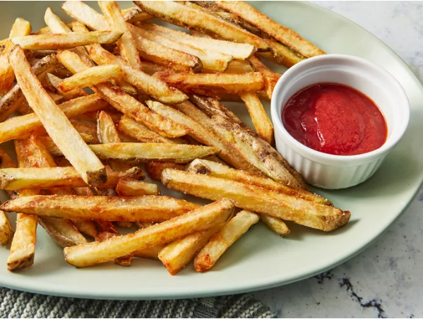

Home
French Fries

These fries are Chef Johns specialty fries. Once you've succesfully made these all other options for fries will never feel the same
- One large Russet potato, cut evenly sized strips
- Vegtable oil for frying, about 2 cups or as needed
- salt to taste
Steps
- Soak potato stips in large bowl of water for about 30 minutes
- pat with paper towels until thoroughly dry
- Heat oil in a deep-fryer OR large sauce pan to 275 degrees F (135 degrees C). Gently add potatoes to the hot oil and fry for 5 minutes, stirring and flipping the potatoes
- Use a slotted spoon to transfer the potatoes to paper towel-lined plate. let cool completely
- heat oil again, but this time to 350 degrees F (175 degrees C). add potatoes and fry a second time until golden brown, 5 to 6 minutes
- Remove from the deep-fryer and blot with paper towel. sprinkle with salt to serve
- Enjoy!